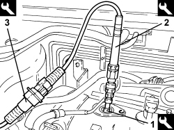

0520G15 COMPRESSION TEST - CHECK WITH EXAMINER WITH SPARK PLUGS/INJECTORS REMOVED
- Path
- Procedures > 05 DIAGNOSTICS > 0520 CHECKS WITH EXAMINER > 0520G INSTRUMENTS > 0520G15 COMPRESSION TEST - CHECK WITH EXAMINER WITH SPARK PLUGS/INJECTORS REMOVED
- Kind
- repair procedure (removal / refitting; the operation number is the code)
- Applies to
- engines: 3.2 JTS; all production periods
- Interactive page
- https://sloeber94.github.io/elrnDB-aBrrSpdr/en/#/946001782
Applies to: engines: 3.2 JTS; all production periods
- Disconnect relays T10 (fuel pump) and T9 (main) in engine compartment junction unit B001.
1. Fit cylinder compression kit (EX 08) of the following tool in the socket of one spark plug in the right cylinder head.
Tool | Description | Function | Validity |
|---|---|---|---|
1806338000 | Transducer Examiner test kit 2 | Cylinder compression test | 3.2 JTS |
2. Connect the 50 bar transducer (EX 05) of the following tool.
Tool | Description | Function | Validity |
|---|---|---|---|
1806338000 | Transducer Examiner test kit 2 | Cylinder compression test | 3.2 JTS |
3. Connect cable (EX 01) of the following tool to the 50 bar transducer and the Examiner SAM card.
Tool | Description | Function | Validity |
|---|---|---|---|
1806337000 | Transducer Examiner test kit 1 | Cylinder compression test | 3.2 JTS |

Applies to: engines: 3.2 JTS; all production periods
- Fit hte intake chamber, refer to
Op. 1072B50 AIR CHAMBER - R.R.
- Select INSTRUMENT mode on the Examiner and run the CYLINDER COMPRESSION TEXT.
- Repeat the test for the remaining cylinders of the right head.